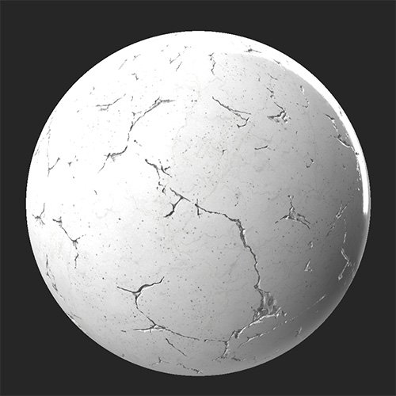

In: Wear and Finish
Use the Cracks filter to age and damage your material by adding a network of cracks and crevices to it.
The Cracks filter applied to a clean marble material.

Basic parameters
Mask
Cracks
Advanced Parameters